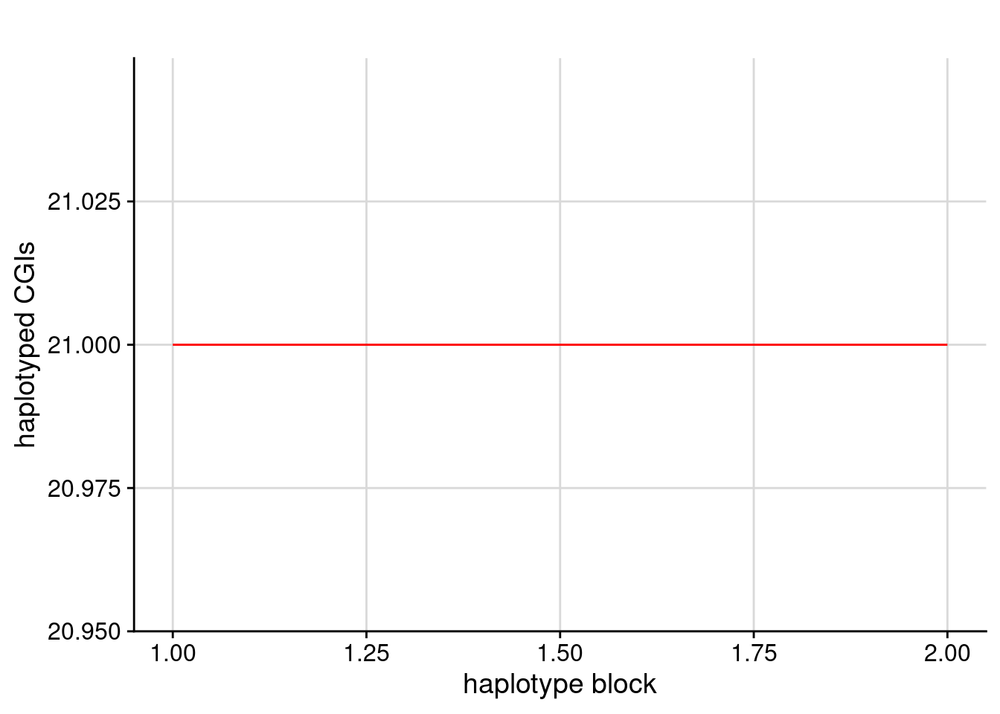
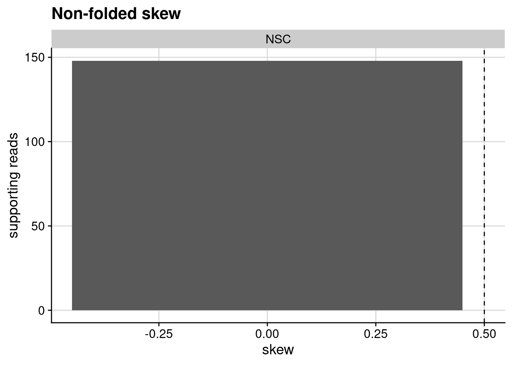
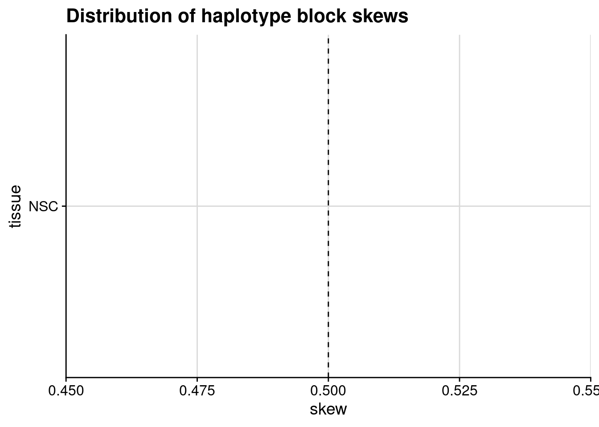
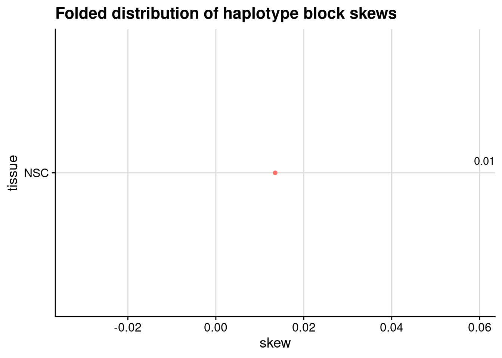

This is a selection of the most relevant QC plots produced by NanoComp and Mosdepth. Ideally, we should have a minimum of 20X coverage of the X chromosome, with read N50s above 10 kb.
2.1.1 Sequencing coverage
For accurate SNV calling and phasing, we need to have a minimum of 20X coverage (ideally 30-50X) of the X chromosome for the individual (combining all samples, if multiple samples are available for this individual). For accurate methylation clustering, a minimum of 15X coverage per sample is required (so each Xa/Xi cluster has at least 5 reads). The following plot shows the coverage of the X chromosome.
Mosdepth coverage plot.
2.1.2 Read statistics
Longer reads improve haplotype block length and skew orientation. N50s above 10 kb are ideal. The following plots show the read length distribution and N50.
Read identity and quality are dependent on the sequencing technology, chemistry version and basecalling model. The plots below allow us to check that the reads match expectations. Discrepancies may indicate a problem with the basecalling (wrong model used), mapping (wrong reference genome) or the sequencing run.
2.2 Phasing Report
2.2.1 Number of haplotyped CpG islands
This plot shows the cumulative sum of the number of CpG islands that are phased in the individual’s X chromosome. There are 879 CpG islands annotated on the human X chromosome (T2T-CHM13v2 build, UCSC annotation). Large haplotype blocks can cover multiple CpG islands, which helps when counting the number of Xa and Xi reads per haplotype (counts from individual CpG islands can be combined for that haplotype block).
Code
#read in the blocksdf <-read_tsv(blocks_stats_file, show_col_types=FALSE)#read in the CGIsCGI <-read_tsv(CGI_bed_file, col_names =c("chr","start","end","N_CpG","length","CpGs","extra1","extra2","extra3","extra4"), show_col_types=FALSE)#count CpG islands per block.dfGR <-as_granges(df, seqnames = chromosome, start = from, end = to)CGIGR <-as_granges(CGI, seqnames = chr)df$CGI_olaps <-count_overlaps(dfGR, CGIGR)#cumulative sum:dforder <-arrange(df,desc(CGI_olaps)) %>%mutate(rn =row_number())p <-ggplot(dforder, aes(x = rn, y =cumsum(CGI_olaps))) +geom_step(colour ="red") +labs(title ="", y ="haplotyped CGIs", x ="haplotype block") +theme_half_open() +background_grid()p#save_plot("mouse_F1_cumulative_plot_CGI_olaps_fig3b.png",p)#save_plot("mouse_F1_cumulative_plot_CGI_olaps_fig3b.svg",p)#save_plot("mouse_F1_cumulative_plot_CGI_olaps_fig3b.pdf",p)

Figure 2.1: Cumulative sum of haplotyped CpG islands
2.2.2 Haplotype blocks and sizes
Ideally the whole X could be resolved into two haplotypes (1 block, block size = chromosome size). However repetitive regions or regions of low SNV density that cannot be spanned by long reads break up the haplotype into haplotype blocks. The whatshap report shows the number of SNVs that were found for the individual’s X chromosomes, how many were phased, into how many blocks and which sizes these blocks are.
Phasing statistics for sample default from file mouse_F1.phased.vcf.gz
---------------- Chromosome chrX ----------------
Variants in VCF: 17315
Heterozygous: 15009 ( 13325 SNVs)
Phased: 13302 ( 13302 SNVs)
Unphased: 1707 (not considered below)
Singletons: 0 (not considered below)
Blocks: 2
Block sizes (no. of variants)
Median block size: 6651.00 variants
Average block size: 6651.00 variants
Largest block: 11855 variants
Smallest block: 1447 variants
Block lengths (basepairs)
Sum of lengths: 2609088 bp
Median block length: 1304544.00 bp
Average block length: 1304544.00 bp
Longest block: 2376324 bp
Shortest block: 232764 bp
Block NG50: 0 bp
2.3 Skew calculations
Skew calculations are based on the number of Xa and Xi reads assigned to each haplotype, in each block. These count tables for each sample can be downloaded below.
This shows how many of the haplotyped CpG islands could be clustered into Xa and Xi methylation states, and are therefore considered informative for skew calculations.
Code
num_clustered_reads <-data.frame()for (tissue in all_tissues) { clustered_reads <-read_tsv(paste(patient, tissue, "CGIX_clustered_reads.tsv.gz", sep="_"), show_col_types=FALSE) num_CGIs <- clustered_reads %>%filter(assigned_X %in%c("Xa","Xi")) %>%pull(CGI_id) %>%unique() %>%length()#cat(paste0(tissue, ": ", num_CGIs, " CGIs haplotyped and clustered as Xa/Xi.\n")) num_clustered_reads <-bind_rows( num_clustered_reads,data.frame(tissue = tissue, num_CGIs = num_CGIs) )}# save tablewrite_tsv(num_clustered_reads, paste0(patient, "_num_clustered_reads.tsv"))# print and format table for reportnum_clustered_reads %>%gt() %>%opt_interactive(use_highlight =TRUE, use_compact_mode =TRUE) %>%# interactive, highlight rows as you hover overtab_options(ihtml.use_page_size_select =TRUE) %>%# choose page sizecols_label(tissue ="Tissue",num_CGIs ="No. of Clustered CpG Islands" )
2.3.2 Maximum likelihood estimate of the skew
The maximum likelihood estimate (MLE) of the skew ratio is calculated by fitting a folded binomial distribution to the haplotype block skews. The log-likelihood function is defined as the log of the folded binomial probability mass function, and the skew ratio that maximizes this function is the MLE estimate.
A sample with perfect balance between the two haplotypes would have a skew ratio of 0.5. A skew of 0.2 would indicate that one haplotype makes 20% of the inactive X chromosomes (20:80 ratio), which is considered a high degree of skew.
Code
# calculate skews# Define the log-likelihood function for folded binomial distribution with varying number of trialslog_likelihood <-function(p, x, n) {# Calculate the factor δ(i, j) delta <-ifelse(x == n - x, 1, 0) log_pmf <-log(1-0.5*delta) +lchoose(n, x) +log(p^x * (1- p)^(n-x) + p^(n-x) * (1- p)^x)return(-sum(log_pmf)) # Negative sum for maximization}#read in the skewsskews <-data.frame()for (tissue in all_tissues){ skew <-read_tsv(paste0(patient, "_",tissue,"_CGIX_skew.tsv.gz"), show_col_types=FALSE) %>%mutate(successes = H1_Xa + H2_Xi, trials = H1_Xa + H1_Xi + H2_Xa + H2_Xi) %>%mutate(successes =ifelse(successes > trials/2, trials - successes, successes)) %>%mutate(p = successes/trials) result <-optimise(f = log_likelihood, interval =c(0,0.5), x = skew$successes, n = skew$trials) mle_ratio <- result$minimum skews <-bind_rows(skews, data.frame(patient = patient, tissue = tissue, mle_ratio = mle_ratio))}write_tsv(skews, paste0(patient, "_skew_ratios.tsv"))skews$mle_round <-round(skews$mle_ratio,2)# probabilities# format tableskews %>%gt() %>%opt_interactive(use_highlight =TRUE, use_compact_mode =TRUE) %>%# interactive, highlight rows as you hover overtab_options(ihtml.use_page_size_select =TRUE) %>%# choose page sizecols_label(patient ="Patient",tissue ="Tissue",mle_ratio ="MLE of Skew Ratio",mle_round ="MLE of Skew Ratio (rounded)" )
2.3.3 Non-folded and folded distributions of haplotype blocks’ skews
The distribution of haplotype block skews can be visualised in several ways. The following plots bin the haplotype block skews in 0.05 intervals and plot the histograms of the skews, weighted by the number of reads supporting the skew. The skews are calculated as the proportion of reads supporting the H1 haplotype being Xa. Because the identity of the H1 haplotype (either maternal or paternal) varies randomly between haplotype blocks, the skew has to be folded around the 0.5 mark (indicated by the dashed line).
Code
#plot the histograms weighted by supporting reads#first read all the skews into 1 table. Keep it longH1_all <-data.frame()for (tissue in all_tissues){ temp <-read_tsv(paste0(patient,"_",tissue,"_CGIX_skew.tsv.gz"), show_col_types=FALSE) %>%mutate(patient = patient, tissue = tissue, folded_skew =ifelse(H1_Xa_skew >0.5, 1- H1_Xa_skew, H1_Xa_skew), reads_in_block = H1_Xa + H2_Xa + H1_Xi + H2_Xi) H1_all <-rbind(H1_all, temp)}#bin the skewsH1_all_binned <- H1_all %>%mutate(H1_Xa_skew_bin =cut(H1_Xa_skew, breaks =seq(0, 1, by =0.05), include.lowest=TRUE)) %>%group_by(tissue, H1_Xa_skew_bin) %>%summarise(reads_in_block_sum =sum(reads_in_block, na.rm =TRUE), .groups ="drop_last")#now foldedH1_all_binned2 <- H1_all %>%mutate(folded_skew_bin =cut(folded_skew, breaks =seq(0, 0.5, by =0.05), include.lowest=TRUE)) %>%group_by(tissue, folded_skew_bin) %>%summarise(reads_in_block_sum =sum(reads_in_block, na.rm =TRUE), .groups ="drop_last")#plot histograms of binned skews with supporting reads, facetting by tissue.p <-ggplot(H1_all_binned, aes(x =as.numeric(gsub("[(\\[]", "", gsub(",.*", "", H1_Xa_skew_bin))), y = reads_in_block_sum)) +geom_bar(stat ="identity") +geom_vline(xintercept =0.5, linetype ="dashed") +labs(title ="Non-folded skew", x ="skew", y ="supporting reads") +theme_half_open() +background_grid() +facet_wrap(tissue ~ .)p

Alternatively the distribution of haplotype block skews can be plotted as density plots, without weighing by the number of reads.
Code
#plot it as ggridges, without weighing by number of readsp <-ggplot(H1_all, aes(x = H1_Xa_skew, y = tissue, fill = tissue)) +geom_density_ridges(bandwidth =0.1) +geom_vline(xintercept =0.5, linetype ="dashed") +labs(title ="Distribution of haplotype block skews", x ="skew", y ="tissue") +theme_half_open() +background_grid() +theme(legend.position ="none")p

Code
#now foldedp <-ggplot(H1_all, aes(x = folded_skew, y = tissue, fill = tissue)) +geom_density_ridges(bandwidth =0.05) +labs(title ="Folded distribution of haplotype block skews", x ="skew", y ="tissue") +theme_half_open() +background_grid() +theme(legend.position ="none") +geom_point(data=skews, aes(x = mle_ratio, y =as.numeric(as.factor(tissue)), colour ="black")) +geom_text(data=skews, aes(x =Inf, y =as.numeric(as.factor(tissue)), label = mle_round), vjust =-1, hjust =1)p

The estimated skew is plotted as a point on the folded skew density plot, with the value displayed on the right.
2.3.4 Correlation in per-block skew between tissues
When multiple samples are available for an individual, and 2 or more samples show evidence of skew, we might ask whether the skew is for the same haplotype across the samples, or whether it might be “flipped”. If the skew is in a consistent direction (e.g. the maternal allele is preferentially the active X), a given haplotype block will be skewed in the same direction in the two samples. This translates into a positive correlation between haplotype-block skews of the two samples.
Code
for (tissue in all_tissues) { skew <-read_tsv(paste0(patient,"_",tissue,"_CGIX_skew.tsv.gz"), show_col_types=FALSE) %>%filter(H1_Xa + H1_Xi + H2_Xa + H2_Xi >=5) %>%select(PS, H1_Xa_skew) %>%mutate(patient = patient)colnames(skew)[2] <-paste0("H1_Xa_skew_",tissue)if (exists("patient_skews")) { patient_skews <-full_join(patient_skews, skew, by =join_by(PS, patient)) } else { patient_skews <- skew }}#pivot longer to get the data in the right format for plotting#patient_skews <- patient_skews %>% pivot_longer(cols = starts_with("H1_Xa_skew"), names_to = "tissue", values_to = "H1_Xa_skew")#remove "H1_Xa_skew_" from the tissue names#patient_skews$tissue <- gsub("H1_Xa_skew_","",patient_skews$tissue)# begin plotting skew correlations with tissuesif (length(all_tissues)>1) { plot_grid_width =2 numplots =length(all_tissues)*(length(all_tissues)-1) size_all_plots <-ceiling(numplots/plot_grid_width)*plot_grid_width all_plots <-vector("list", size_all_plots) n <-0for (i in1:(length(all_tissues)-1)) { tissuei <- all_tissues[[i]]for (j in (i+1):length(all_tissues)) { n <- n +1 tissuej <- all_tissues[[j]] aes_xmap <-sym(paste0("H1_Xa_skew_", tissuei)) aes_ymap <-sym(paste0("H1_Xa_skew_", tissuej)) title <-paste("H1", tissuei, "vs", tissuej) xlabel <-paste(tissuei, "skew") ylabel <-paste(tissuej, "skew") subp <-ggplot( patient_skews,aes(x=!!aes_xmap, y=!!aes_ymap) ) +theme_half_open() +geom_point() +background_grid() +labs(title = title, x = xlabel, y = ylabel) +geom_smooth(method ="lm", se =FALSE) +ylim(c(0,1)) all_plots[[n]] <- subp } } p <-plot_grid(plotlist=all_plots, ncol=plot_grid_width) p#save_plot("H1/H1_skew_correlations_blood_saliva_buccal.png",p, base_aspect_ratio = 2.7)#save_plot("H1/H1_skew_correlations_blood_saliva_buccal.svg",p, base_aspect_ratio = 2.7)#save_plot("H1/H1_skew_correlations_blood_saliva_buccal.pdf",p, base_aspect_ratio = 2.7)} else {cat("Only one tissue sample available.\n")cat("To view skew correlation between tissues, provide multiple samples for this individual.") plot_grid_width=1}
Only one tissue sample available.
To view skew correlation between tissues, provide multiple samples for this individual.
2.4 Skew-based haplotype-scaffolding and per-block skew orientation
When a sample is skewed, the haplotype blocks can be scaffolded based on the skew. We can decide to relabel haplotype1/haplotype2 for each haplotype block so that the scaffolded haplotype1 corresponds to the preferentially active X, and is thus consistently either the maternal or paternal allele. Haplotype blocks can be scaffolded if there’s a high degree of certainty for the orientation of the skew in this block. Higher skews and higher read counts in the block lead to higher certainty. The following plots show the log-odds of haplotype1 being the preferential Xa in each haplotype block. Haplotype blocks above the red line at +1 indicate that haplotype1 is over 10 times more likely to be the preferential Xa than haplotype2 in those blocks, and conversely for values below -1.
Code
#plot skewsall_plots =vector("list", length(all_tissues))for (i in1:length(all_tissues)) { tissue = all_tissues[[i]] ptissue <- skews[skews$tissue == tissue, "mle_ratio"] # get the skew ratio for this tissue skew_tissue <-read_tsv(paste0(patient, "_",tissue,"_CGIX_skew.tsv.gz"), show_col_types=FALSE) %>%mutate(successes = H1_Xa + H2_Xi, trials = H1_Xa + H1_Xi + H2_Xa + H2_Xi,folded_p =ifelse(successes > trials/2, 1- H1_Xa_skew, H1_Xa_skew)) %>%mutate(logodds = (2*successes - trials)*log10(ptissue)+(trials -2*successes)*log10(1- ptissue))#write this table to a filewrite_tsv(skew_tissue, paste0(patient, "_",tissue,"_CGIX_skew_logodds.tsv.gz")) all_plots[[i]] <-ggplot(skew_tissue, aes(x=trials, y=logodds)) +geom_point() +labs(title =paste("H1", tissue, "skew"), x ="counted reads in block", y ="log10 odds of orientation") +theme_half_open() +background_grid() +geom_hline(yintercept =c(-1,1), colour ="red")}p <-plot_grid(plotlist=all_plots, ncol=plot_grid_width)p
Skewed X inactivation can be deleterious if a disease-causing variant is on the preferentially active allele, or protective if the variant is on the preferentially inactive allele. This can be determined by finding the haplotype block that contains the variant, checking which haplotype the variant is on, and then checking the skew orientation in that block.
Source Code
---title: "mouse_F1"format: html: grid: body-width: 900px toc: true toc-depth: 3 code-fold: true code-tools: true---## QCThis is a selection of the most relevant QC plots produced by [NanoComp](https://github.com/wdecoster/NanoComp) and [Mosdepth](https://github.com/brentp/mosdepth). Ideally, we should have a minimum of 20X coverage of the X chromosome, with read N50s above 10 kb.### Sequencing coverageFor accurate SNV calling and phasing, we need to have a minimum of 20X coverage (ideally 30-50X) of the X chromosome for the individual (combining all samples, if multiple samples are available for this individual). For accurate methylation clustering, a minimum of 15X coverage per sample is required (so each Xa/Xi cluster has at least 5 reads). The following plot shows the coverage of the X chromosome.```{=html}<figure style="width:100%;height:100%;"> <iframe src="mouse_F1.dist.html" style="width:900px;height:1000px;overflow:hidden;margin:0px;padding:0px;border:none;"></iframe> <figcaption>Mosdepth coverage plot.</figcaption></figure>```### Read statisticsLonger reads improve haplotype block length and skew orientation. N50s above 10 kb are ideal. The following plots show the read length distribution and N50.```{=html}<iframe src="mouse_F1_NanoComp_log_length_violin.html" style="width:100%;height:50vh;overflow:hidden;margin:0px;padding:0px;border:none;"></iframe>``````{=html}<iframe src="mouse_F1_NanoComp_N50.html" style="width:100%;height:50vh;overflow:hidden;margin:0px;padding:0px;border:none;"></iframe>```Read identity and quality are dependent on the sequencing technology, chemistry version and basecalling model. The plots below allow us to check that the reads match expectations. Discrepancies may indicate a problem with the basecalling (wrong model used), mapping (wrong reference genome) or the sequencing run.```{=html}<iframe src="mouse_F1_NanoComp_percentIdentity_violin.html" style="width:100%;height:50vh;overflow:hidden;margin:0px;padding:0px;border:none;"></iframe>``````{=html}<iframe src="mouse_F1_NanoComp_quals_violin.html" style="width:100%;height:50vh;overflow:hidden;margin:0px;padding:0px;border:none;"></iframe>```## Phasing Report```{r}#| label: load-libraries#| echo: false#| message: false#| warning: falselibrary(tidyverse)library(cowplot)library(plyranges)library(ggridges)library(gt)``````{r}#| label: set-variables#| echo: falsepatient <-"mouse_F1"all_tissues <-c("NSC")blocks_stats_file <-"mouse_F1_blocks.tsv"CGI_bed_file <-"CGIs_mm38_chrX.bed"```### Number of haplotyped CpG islandsThis plot shows the cumulative sum of the number of CpG islands that are phased in the individual's X chromosome.There are 879 CpG islands annotated on the human X chromosome (T2T-CHM13v2 build, UCSC annotation). Large haplotype blocks can cover multiple CpG islands, which helps when counting the number of Xa and Xi reads per haplotype (counts from individual CpG islands can be combined for that haplotype block).```{r}#| label: fig-cumulative-sum-CGI-cover#| fig-cap: "Cumulative sum of haplotyped CpG islands"#| column: page#read in the blocksdf <-read_tsv(blocks_stats_file, show_col_types=FALSE)#read in the CGIsCGI <-read_tsv(CGI_bed_file, col_names =c("chr","start","end","N_CpG","length","CpGs","extra1","extra2","extra3","extra4"), show_col_types=FALSE)#count CpG islands per block.dfGR <-as_granges(df, seqnames = chromosome, start = from, end = to)CGIGR <-as_granges(CGI, seqnames = chr)df$CGI_olaps <-count_overlaps(dfGR, CGIGR)#cumulative sum:dforder <-arrange(df,desc(CGI_olaps)) %>%mutate(rn =row_number())p <-ggplot(dforder, aes(x = rn, y =cumsum(CGI_olaps))) +geom_step(colour ="red") +labs(title ="", y ="haplotyped CGIs", x ="haplotype block") +theme_half_open() +background_grid()p#save_plot("mouse_F1_cumulative_plot_CGI_olaps_fig3b.png",p)#save_plot("mouse_F1_cumulative_plot_CGI_olaps_fig3b.svg",p)#save_plot("mouse_F1_cumulative_plot_CGI_olaps_fig3b.pdf",p)```### Haplotype blocks and sizesIdeally the whole X could be resolved into two haplotypes (1 block, block size = chromosome size). However repetitive regions or regions of low SNV density that cannot be spanned by long reads break up the haplotype into haplotype blocks.The [whatshap]() report shows the number of SNVs that were found for the individual’s X chromosomes, how many were phased, into how many blocks and which sizes these blocks are.{{< include _mouse_F1_whatshapstats.qmd >}}## Skew calculationsSkew calculations are based on the number of Xa and Xi reads assigned to each haplotype, in each block. These count tables for each sample can be downloaded below.```{r}#| label: print-haplotype-skew-download-buttons#| echo: true#| output: asistarcmd =paste0("tar -hcf", patient, "_CGIX_skews.tar")for (tissue in all_tissues) { CGIX_skewfile =paste(patient, tissue, "CGIX_skew.tsv.gz", sep="_") tarcmd =paste(tarcmd, CGIX_skewfile)}system(tarcmd)```{{< downloadthis mouse_F1_CGIX_skews.tar dname="mouse_F1_CGIX_skews", label="Download haplotype block counts by tissue", icon="file-earmark-arrow-down" type="secondary" class="data-button" id="CGIX_skews" >}}### Number of clustered CpG islandsThis shows how many of the haplotyped CpG islands could be clustered into Xa and Xi methylation states, and are therefore considered informative for skew calculations.```{r}#| label: num-clustered-read_tsv#| echo: true#| output: asisnum_clustered_reads <-data.frame()for (tissue in all_tissues) { clustered_reads <-read_tsv(paste(patient, tissue, "CGIX_clustered_reads.tsv.gz", sep="_"), show_col_types=FALSE) num_CGIs <- clustered_reads %>%filter(assigned_X %in%c("Xa","Xi")) %>%pull(CGI_id) %>%unique() %>%length()#cat(paste0(tissue, ": ", num_CGIs, " CGIs haplotyped and clustered as Xa/Xi.\n")) num_clustered_reads <-bind_rows( num_clustered_reads,data.frame(tissue = tissue, num_CGIs = num_CGIs) )}# save tablewrite_tsv(num_clustered_reads, paste0(patient, "_num_clustered_reads.tsv"))# print and format table for reportnum_clustered_reads %>%gt() %>%opt_interactive(use_highlight =TRUE, use_compact_mode =TRUE) %>%# interactive, highlight rows as you hover overtab_options(ihtml.use_page_size_select =TRUE) %>%# choose page sizecols_label(tissue ="Tissue",num_CGIs ="No. of Clustered CpG Islands" )```{{< downloadthis mouse_F1_num_clustered_reads.tsv dname="mouse_F1_num_clustered_reads" label="Download this table of numbers of clustered CGIs" icon="file-earmark-arrow-down" type="secondary" class="data-button" id="num_clustered_reads" >}}### Maximum likelihood estimate of the skewThe maximum likelihood estimate (MLE) of the skew ratio is calculated by fitting a folded binomial distribution to the haplotype block skews. The log-likelihood function is defined as the log of the folded binomial probability mass function, and the skew ratio that maximizes this function is the MLE estimate.A sample with perfect balance between the two haplotypes would have a skew ratio of 0.5. A skew of 0.2 would indicate that one haplotype makes 20% of the inactive X chromosomes (20:80 ratio), which is considered a high degree of skew.```{r}#| label: MLE-skew#| echo: true#| output: asis# calculate skews# Define the log-likelihood function for folded binomial distribution with varying number of trialslog_likelihood <-function(p, x, n) {# Calculate the factor δ(i, j) delta <-ifelse(x == n - x, 1, 0) log_pmf <-log(1-0.5*delta) +lchoose(n, x) +log(p^x * (1- p)^(n-x) + p^(n-x) * (1- p)^x)return(-sum(log_pmf)) # Negative sum for maximization}#read in the skewsskews <-data.frame()for (tissue in all_tissues){ skew <-read_tsv(paste0(patient, "_",tissue,"_CGIX_skew.tsv.gz"), show_col_types=FALSE) %>%mutate(successes = H1_Xa + H2_Xi, trials = H1_Xa + H1_Xi + H2_Xa + H2_Xi) %>%mutate(successes =ifelse(successes > trials/2, trials - successes, successes)) %>%mutate(p = successes/trials) result <-optimise(f = log_likelihood, interval =c(0,0.5), x = skew$successes, n = skew$trials) mle_ratio <- result$minimum skews <-bind_rows(skews, data.frame(patient = patient, tissue = tissue, mle_ratio = mle_ratio))}write_tsv(skews, paste0(patient, "_skew_ratios.tsv"))skews$mle_round <-round(skews$mle_ratio,2)# probabilities# format tableskews %>%gt() %>%opt_interactive(use_highlight =TRUE, use_compact_mode =TRUE) %>%# interactive, highlight rows as you hover overtab_options(ihtml.use_page_size_select =TRUE) %>%# choose page sizecols_label(patient ="Patient",tissue ="Tissue",mle_ratio ="MLE of Skew Ratio",mle_round ="MLE of Skew Ratio (rounded)" )```{{< downloadthis mouse_F1_skew_ratios.tsv dname="mouse_F1_skew_ratios" label="Download this table of estimated skews" icon="file-earmark-arrow-down" type="secondary" class="data-button" id="mle_skews" >}}### Non-folded and folded distributions of haplotype blocks' skewsThe distribution of haplotype block skews can be visualised in several ways.The following plots bin the haplotype block skews in 0.05 intervals and plot the histograms of the skews, weighted by the number of reads supporting the skew. The skews are calculated as the proportion of reads supporting the H1 haplotype being Xa. Because the identity of the H1 haplotype (either maternal or paternal) varies randomly between haplotype blocks, the skew has to be folded around the 0.5 mark (indicated by the dashed line).```{r}#| label: distributions-of-skews#plot the histograms weighted by supporting reads#first read all the skews into 1 table. Keep it longH1_all <-data.frame()for (tissue in all_tissues){ temp <-read_tsv(paste0(patient,"_",tissue,"_CGIX_skew.tsv.gz"), show_col_types=FALSE) %>%mutate(patient = patient, tissue = tissue, folded_skew =ifelse(H1_Xa_skew >0.5, 1- H1_Xa_skew, H1_Xa_skew), reads_in_block = H1_Xa + H2_Xa + H1_Xi + H2_Xi) H1_all <-rbind(H1_all, temp)}#bin the skewsH1_all_binned <- H1_all %>%mutate(H1_Xa_skew_bin =cut(H1_Xa_skew, breaks =seq(0, 1, by =0.05), include.lowest=TRUE)) %>%group_by(tissue, H1_Xa_skew_bin) %>%summarise(reads_in_block_sum =sum(reads_in_block, na.rm =TRUE), .groups ="drop_last")#now foldedH1_all_binned2 <- H1_all %>%mutate(folded_skew_bin =cut(folded_skew, breaks =seq(0, 0.5, by =0.05), include.lowest=TRUE)) %>%group_by(tissue, folded_skew_bin) %>%summarise(reads_in_block_sum =sum(reads_in_block, na.rm =TRUE), .groups ="drop_last")#plot histograms of binned skews with supporting reads, facetting by tissue.p <-ggplot(H1_all_binned, aes(x =as.numeric(gsub("[(\\[]", "", gsub(",.*", "", H1_Xa_skew_bin))), y = reads_in_block_sum)) +geom_bar(stat ="identity") +geom_vline(xintercept =0.5, linetype ="dashed") +labs(title ="Non-folded skew", x ="skew", y ="supporting reads") +theme_half_open() +background_grid() +facet_wrap(tissue ~ .)p```Alternatively the distribution of haplotype block skews can be plotted as density plots, without weighing by the number of reads.```{r}#plot it as ggridges, without weighing by number of readsp <-ggplot(H1_all, aes(x = H1_Xa_skew, y = tissue, fill = tissue)) +geom_density_ridges(bandwidth =0.1) +geom_vline(xintercept =0.5, linetype ="dashed") +labs(title ="Distribution of haplotype block skews", x ="skew", y ="tissue") +theme_half_open() +background_grid() +theme(legend.position ="none")p#now foldedp <-ggplot(H1_all, aes(x = folded_skew, y = tissue, fill = tissue)) +geom_density_ridges(bandwidth =0.05) +labs(title ="Folded distribution of haplotype block skews", x ="skew", y ="tissue") +theme_half_open() +background_grid() +theme(legend.position ="none") +geom_point(data=skews, aes(x = mle_ratio, y =as.numeric(as.factor(tissue)), colour ="black")) +geom_text(data=skews, aes(x =Inf, y =as.numeric(as.factor(tissue)), label = mle_round), vjust =-1, hjust =1)p```The estimated skew is plotted as a point on the folded skew density plot, with the value displayed on the right.### Correlation in per-block skew between tissuesWhen multiple samples are available for an individual, and 2 or more samples show evidence of skew, we might ask whether the skew is for the same haplotype across the samples, or whether it might be "flipped".If the skew is in a consistent direction (e.g. the maternal allele is preferentially the active X), a given haplotype block will be skewed in the same direction in the two samples. This translates into a positive correlation between haplotype-block skews of the two samples.```{r}#| label: skew-between-tissuesfor (tissue in all_tissues) { skew <-read_tsv(paste0(patient,"_",tissue,"_CGIX_skew.tsv.gz"), show_col_types=FALSE) %>%filter(H1_Xa + H1_Xi + H2_Xa + H2_Xi >=5) %>%select(PS, H1_Xa_skew) %>%mutate(patient = patient)colnames(skew)[2] <-paste0("H1_Xa_skew_",tissue)if (exists("patient_skews")) { patient_skews <-full_join(patient_skews, skew, by =join_by(PS, patient)) } else { patient_skews <- skew }}#pivot longer to get the data in the right format for plotting#patient_skews <- patient_skews %>% pivot_longer(cols = starts_with("H1_Xa_skew"), names_to = "tissue", values_to = "H1_Xa_skew")#remove "H1_Xa_skew_" from the tissue names#patient_skews$tissue <- gsub("H1_Xa_skew_","",patient_skews$tissue)# begin plotting skew correlations with tissuesif (length(all_tissues)>1) { plot_grid_width =2 numplots =length(all_tissues)*(length(all_tissues)-1) size_all_plots <-ceiling(numplots/plot_grid_width)*plot_grid_width all_plots <-vector("list", size_all_plots) n <-0for (i in1:(length(all_tissues)-1)) { tissuei <- all_tissues[[i]]for (j in (i+1):length(all_tissues)) { n <- n +1 tissuej <- all_tissues[[j]] aes_xmap <-sym(paste0("H1_Xa_skew_", tissuei)) aes_ymap <-sym(paste0("H1_Xa_skew_", tissuej)) title <-paste("H1", tissuei, "vs", tissuej) xlabel <-paste(tissuei, "skew") ylabel <-paste(tissuej, "skew") subp <-ggplot( patient_skews,aes(x=!!aes_xmap, y=!!aes_ymap) ) +theme_half_open() +geom_point() +background_grid() +labs(title = title, x = xlabel, y = ylabel) +geom_smooth(method ="lm", se =FALSE) +ylim(c(0,1)) all_plots[[n]] <- subp } } p <-plot_grid(plotlist=all_plots, ncol=plot_grid_width) p#save_plot("H1/H1_skew_correlations_blood_saliva_buccal.png",p, base_aspect_ratio = 2.7)#save_plot("H1/H1_skew_correlations_blood_saliva_buccal.svg",p, base_aspect_ratio = 2.7)#save_plot("H1/H1_skew_correlations_blood_saliva_buccal.pdf",p, base_aspect_ratio = 2.7)} else {cat("Only one tissue sample available.\n")cat("To view skew correlation between tissues, provide multiple samples for this individual.") plot_grid_width=1}```## Skew-based haplotype-scaffolding and per-block skew orientationWhen a sample is skewed, the haplotype blocks can be scaffolded based on the skew. We can decide to relabel haplotype1/haplotype2 for each haplotype block so that the scaffolded haplotype1 corresponds to the preferentially active X, and is thus consistently either the maternal or paternal allele.Haplotype blocks can be scaffolded if there’s a high degree of certainty for the orientation of the skew in this block. Higher skews and higher read counts in the block lead to higher certainty.The following plots show the log-odds of haplotype1 being the preferential Xa in each haplotype block.Haplotype blocks above the red line at +1 indicate that haplotype1 is over 10 times more likely to be the preferential Xa than haplotype2 in those blocks, and conversely for values below -1.```{r}#plot skewsall_plots =vector("list", length(all_tissues))for (i in1:length(all_tissues)) { tissue = all_tissues[[i]] ptissue <- skews[skews$tissue == tissue, "mle_ratio"] # get the skew ratio for this tissue skew_tissue <-read_tsv(paste0(patient, "_",tissue,"_CGIX_skew.tsv.gz"), show_col_types=FALSE) %>%mutate(successes = H1_Xa + H2_Xi, trials = H1_Xa + H1_Xi + H2_Xa + H2_Xi,folded_p =ifelse(successes > trials/2, 1- H1_Xa_skew, H1_Xa_skew)) %>%mutate(logodds = (2*successes - trials)*log10(ptissue)+(trials -2*successes)*log10(1- ptissue))#write this table to a filewrite_tsv(skew_tissue, paste0(patient, "_",tissue,"_CGIX_skew_logodds.tsv.gz")) all_plots[[i]] <-ggplot(skew_tissue, aes(x=trials, y=logodds)) +geom_point() +labs(title =paste("H1", tissue, "skew"), x ="counted reads in block", y ="log10 odds of orientation") +theme_half_open() +background_grid() +geom_hline(yintercept =c(-1,1), colour ="red")}p <-plot_grid(plotlist=all_plots, ncol=plot_grid_width)ptarcmd =paste0("tar -hcf", patient, "_CGIX_skews_logodds.tar")for (tissue in all_tissues) { CGIX_skewoddsfile =paste(patient, tissue, "CGIX_skew_logodds.tsv.gz", sep="_") tarcmd =paste(tarcmd, CGIX_skewoddsfile)}system(tarcmd)```{{< downloadthis mouse_F1_CGIX_skews_logodds.tar dname="mouse_F1_CGIX_skews_logodds", label="Download tables of block skews with logodds of orientation", icon="file-earmark-arrow-down" type="secondary" class="data-button" id="CGIX_skews_logodds" >}}### Is the skew deleterious or protective?Skewed X inactivation can be deleterious if a disease-causing variant is on the preferentially active allele, or protective if the variant is on the preferentially inactive allele.This can be determined by finding the haplotype block that contains the variant, checking which haplotype the variant is on, and then checking the skew orientation in that block.